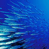

For 50 years, WWF has been protecting the future of nature.
The world’s leading conservation organization, WWF works in 100 countries and is supported by more than one million members in the United States and close to five million globally.
WWF's unique way of working combines global reach with a foundation in science, involves action at every level from local to global, and ensures the delivery of innovative solutions that meet the needs of both people and nature.
Together, in partnership with foundations, governments, businesses, communities, individuals and our more than six million members, we can conserve many of the world’s most ecologically important regions.
How we work
We work globally in 6 key areas
Forests
Conserve the world's most important forests.

Oceans
Safeguard healthy oceans and marine livelihoods.
Freshwater
Secure water for people and nature.
Wildlife
Protect the world's most important species.
Food
Double net food availability; freeze its footprint.
Climate
Create a climate-resilient and zero-carbon world, powered by renewable energy.
Together We Can Do It!
In this video, Marco Lambertini, Director General, WWF International, talks about WWF’s new way of working and commitment to conservation results.
Together, we can achieve WWF’s mission to conserve nature and reduce the most pressing threats to the diversity of life on Earth.
WWF-US is part of the WWF global network which has worked for more than 50 years to protect the future of nature.
In 2016, WWF embraced a bold new strategy and transformation designed to make the organization stronger and even more effective in tackling the challenges ahead.